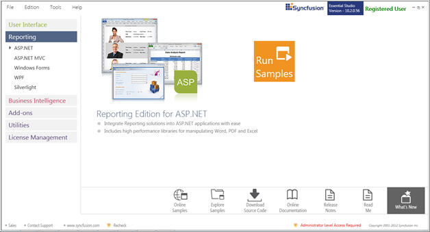
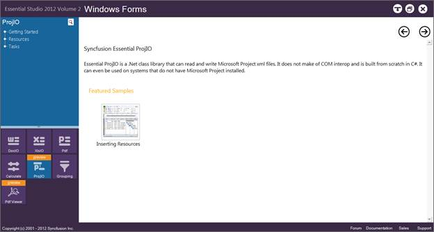
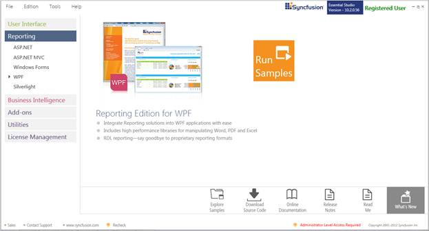
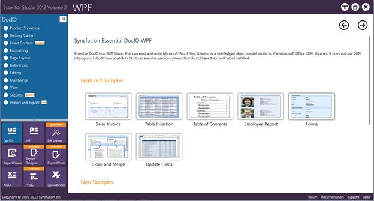
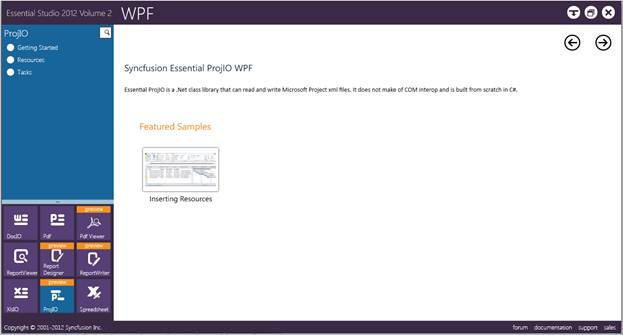

The samples can be viewed in any of the following three ways:
· Run Samples – Click to view the locally installed samples.
· Online Samples-Click to view online samples.
· Explore Samples – Explore samples on disk.
To view the samples:
1. Click Start -> All Programs-> Syncfusion -> Essential Studio <x.x.x.x> -> Dashboard. The UI samples are displayed by default.
2. Select Reporting.

Figure 1: Essential Studio Reporting Dashboard
The steps to view the ProjIO samples in various platforms are discussed below.
Windows
1. In the Dashboard window, click Run Samples for Windows Forms under Reporting Edition Panel. The Windows Forms Sample Browser window is displayed.

Figure 2: Essential Studio Reporting Windows Forms Dashboard
2. Click ProjIO from the bottom-left pane. The ProjIO samples are displayed.

Figure 3: Essential Studio Reporting ProjIO Samples
3. Select any sample and browse through the features.
WPF
1. In the dashboard window, click Run Samples for WPF under Reporting edition panel. The WPF Sample Browser window is displayed.

Figure 4: Essential Studio Reporting Dashboard
4. Select Run Samples. The default WPF sample will be displayed.

Figure 5: Essential Studio Reporting WPF Dashboard
5. Click ProjIO form the bottom-left pane and browse through the features.

Figure 5: Essential Studio Reporting ProjIO Samples